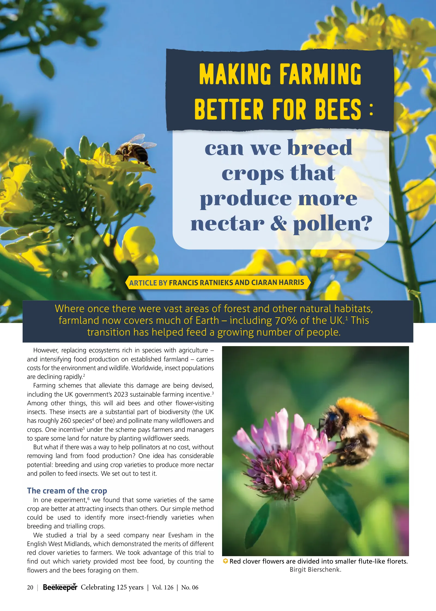

However, replacing ecosystems rich in species with agriculture –
and intensifying food production on established farmland – carries
costs for the environment and wildlife. Worldwide, insect populations
are declining rapidly.2
Farming schemes that alleviate this damage are being devised,
including the UK government’s 2023 sustainable farming incentive.3
Among other things, this will aid bees and other flower-visiting
insects. These insects are a substantial part of biodiversity (the UK
has roughly 260 species4 of bee) and pollinate many wildflowers and
crops. One incentive5 under the scheme pays farmers and managers
to spare some land for nature by planting wildflower seeds.
But what if there was a way to help pollinators at no cost, without
removing land from food production? One idea has considerable
potential: breeding and using crop varieties to produce more nectar
and pollen to feed insects. We set out to test it.
The cream of the crop
In one experiment,6 we found that some varieties of the same
crop are better at attracting insects than others. Our simple method
could be used to identify more insect-friendly varieties when
breeding and trialling crops.
We studied a trial by a seed company near Evesham in the
English West Midlands, which demonstrated the merits of different
red clover varieties to farmers. We took advantage of this trial to
find out which variety provided most bee food, by counting the
flowers and the bees foraging on them.
Where once there were vast areas of forest and other natural habitats,
farmland now covers much of Earth – including 70% of the UK.1 This
transition has helped feed a growing number of people.
ARTICLE BY FRANCIS RATNIEKS AND CIARAN HARRIS
Red clover flowers are divided into smaller flute-like florets.
Birgit Bierschenk.
20 |
Celebrating 125 years | Vol. 126 | No. 06